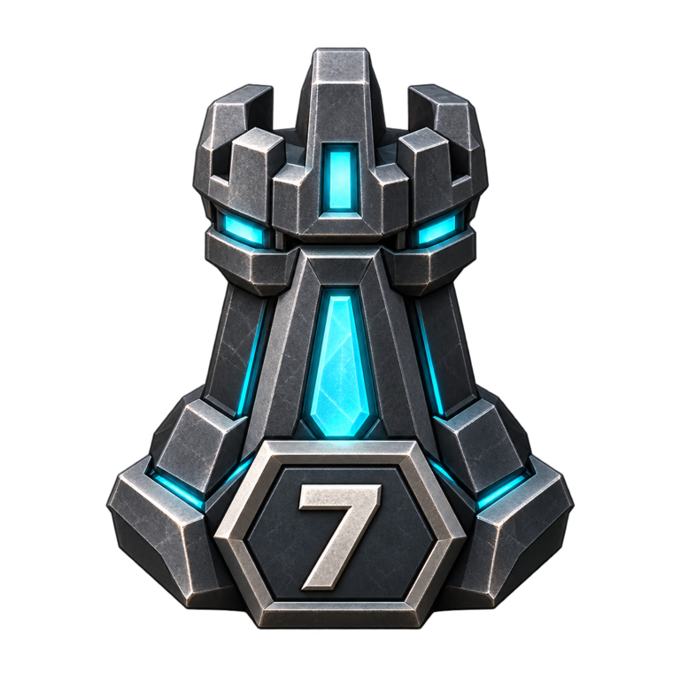

LiveTurn 9
StoneMasonvsRiverKnight
Scan the position, rating, clock and current turn before you enter a match.
White has the move. Legal, selected, attack and support states stay visible while spectator controls remain read-only.
 Wiggins1540 · White
Wiggins1540 · White

Prplbuttrfly301588 · BlackBoard state, rating, match type and whose turn it is stay visible before you open the full spectator board.
Switch to another live queue, or open Play if you want to start a match instead.
Watch mode uses the same tactical language as Play, but all board interaction stays read-only.
Player, rating, side, match type and clock remain visible before and during spectating.
Cyan legal moves, gold selection, red threats and green support match the Play interface.
Bookmark a live position and return without turning spectator mode into another game control panel.
On phones, filters scroll horizontally, each live board becomes full width, and match actions remain thumb-friendly below the position.